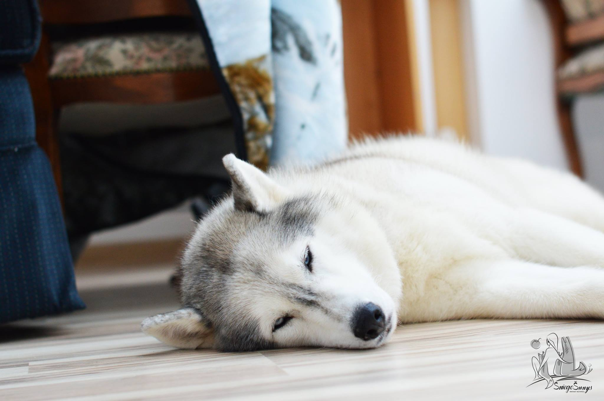

Šunys. Visos šunų veislės su nuotraukomis - daugiau nei 300+ veislių
2020.10.30 06:04
Turime 300+ šunų veislių su paveiksliukais !
Populiarios veislės: Bokseris , Buldogas , Biglis , Pudelis , Taksas , Auksaspalvis retriveris ... Kačiųveislės Uždaryti
Visos šunų veislės
( 300+ )Dydis
Labai dideli šunys Dideli šunys Vidutiniai šunys Maži šunysVeislės grupė
Žaisliniai šunys Sportiniai šunys Skalikai Terjerai Darbiniai šunys GanytojaiSpalva
Balti šunys Juodi šunys Mėlyni šunys Rudi šunys Raudoni šunys Pilki šunys Auksiniai šunysTop 30 veislių
1 Labradoro retriveris 2 Vokiečių aviganis 3 Biglis 4 Auksaspalvis retriveris 5 Jorkšyro terjeras 6 Buldogas 7 Bokseris 8 Pudelis 9 Taksas 10 Rotveileris 11 Ši Cu 12 Cvergšnauceris 13 Dobermanas 14 Čihuahua 15 Kurtsharas 16 Sibiro haskis 17 Pomeranijos špicas 18 Prancūzų buldogas 19 Vokiečių dogas 20 Šeltis 21 Kavalieriaus karaliaus Karolio spanielis 22 Bostono terjeras 23 Maltos bišonas 24 Australų aviganis 25 Valų korgis pembrukas 26 Mopsas 27 Amerikiečių kokerspanielis 28 Anglų mastifas 29 Anglų springerspanielis 30 Bretonės spanielisŠunų vardai patinui Šunų vardai kalytei
Draugai
All Logo Game answers Emoji quiz antwoorden Wordbrain themes Think game answers Woord Snack antwoorden Pictoword answers Šunų veislės A-Z A B C D E F G H I J K L M N O P R S T Ū V Ž Paveiksliukas Veislė Klasifikacija TrumpaiLabradoro retriveris
Dydis: Vidutinių šunų grupėGrupė: 8 grupė: retriveriai, flushing dogs, vandens šunys. 1 sekcija: retriveriai
Hipoalerginis: Ne
Plačiai paplitusi nuomonė, kad labradoro retriveris yra kilęs iš Niūfaundlendo salos, kur žvejai
DaugiauVokiečių aviganis
Dydis: Didelių šunų grupėGrupė: Ganytojai
Hipoalerginis: Ne
Elgsena ir charakteris Vokiečių aviganiai – išlaikantys pusiausvyrą ir pasitikintis savimi šunys, nuoširdūs
DaugiauBiglis
Dydis: Mažų šunų grupėGrupė: Skalikai
Hipoalerginis: Ne
Kilmės istorija Pirmą kartą apie mažuosius skalikus žinių randama 1481 m. XVI a.
DaugiauAuksaspalvis retriveris
Dydis: Didelių šunų grupėGrupė: Sportiniai šunys
Hipoalerginis: Ne
Kilmės istorija Manoma, kad auksaspalvių retriverių veislė buvo išvesta XIX a. pabaigoje, sukryžminus
DaugiauJorkšyro terjeras
Dydis: Mažieji šunysGrupė: Žaisliniai šunys
Hipoalerginis: Taip
Jorkšyro terjeras – dekoratyvinių šunų veislė, išvesta apie 1800 m. Anglijoje. Manoma, kad
DaugiauBuldogas
Dydis: Vidutinių šunų grupėGrupė: Pinčeriai ir šnauceriai, molosai ir šveicarų kalnų šunys. Molosų pogrupis
Hipoalerginis: Ne
Buldogai – šunų veislių grupė. Yra kelios buldogų veislės: amerikiečių buldogas, anglų buldogas,
DaugiauVokiečių bokseris
Dydis: Vidutinių šunų grupėGrupė: Pinčeriai ir šnauceriai, molosai ir šveicarų kalnų šunys. Molosų pogrupis
Hipoalerginis: Ne
Bokseris buvo gautas sukryžminus dviejų tipų mastifus, su kuriais buvo medžiojama viduramžiais Vokietijoje.
DaugiauPudelis
Dydis: Mažieji šunysGrupė: Žaisliniai, nesportiniai šunys
Hipoalerginis: Taip
Pudelių kilmė iki šiol nėra aiški. Apie juos prirašyta daug skirtingų pasakojimų. Manoma,
DaugiauTaksas
Dydis: Mažų šunų grupėGrupė: Skalikai
Hipoalerginis: Ne
Manoma, kad taksų veislė atsirado maždaug XV a. Europoje, bet panašūs į taksus
DaugiauRotveileris
Dydis: Didelių šunų grupėGrupė: Pinčeriai ir šnauceriai, molosai ir šveicarų kalnų šunys. Molosų pogrupis
Hipoalerginis: Ne
Rotveileriai – viena seniausių šunų veislių pasaulyje. Jų protėviai buvo gyvulių varovai ir
DaugiauČekoslovakų vilkšunis
Dydis: Didelių šunų grupėGrupė: Ganytojai
Hipoalerginis: Ne
Kad būtų išveistas Čekoslovakų vilkšunis, 1955 metais tuometinėje Čekoslovakijoje buvo atliktas eksperimentas ir
DaugiauSenasis anglų buldogas
Dydis: Didelių šunų grupėGrupė: nestandartinė
Hipoalerginis: Ne
Senasis anglų buldogas yra neseniai JAV išvesta šunų veislė. Buvo kryžminami anglų buldogai
DaugiauPrancūzų baltai-juodas skalikas
Dydis: Didelių šunų grupėGrupė: Skalikai
Hipoalerginis: Ne
Prancūzų baltai-juodas skalikas yra šunų veislė, išvesta Prancūzijoje XIX amžiaus viduryje. Jie yra
DaugiauBarzdotasis kolis
Dydis: Vidutinių šunų grupėGrupė: Ganytojai
Hipoalerginis: Ne
Barzdotasis kolis yra iš Didžiosios Britanijos (spėjama, Škotijos) kilęs aviganis. Anksčiau buvo veisiamas
DaugiauMopsas
Dydis: Mažieji šunysGrupė: Žaisliniai šunys
Hipoalerginis: Ne
Mopsai kilo iš Azijos, Kinijos, ir yra viena seniausių veislių pasaulyje. Spėjama, kad
DaugiauPaterdalio terjeras
Dydis: Mažų šunų grupėGrupė: Terjerai
Hipoalerginis: Ne
Paterdalio terjeras yra Anglijos šunų veislė, kilusi iš šiaurinių terjerų veislės XX a.
DaugiauRajapalayam
Dydis: Didelių šunų grupėGrupė: Skalikai
Hipoalerginis: Ne
Rajapalayam yra indiška kurtų veislė. Pietų Indijoje šie šunys buvo kilmingųjų ir aristokratų
DaugiauŠiperkas
Dydis: Mažų šunų grupėGrupė: nesportiniai šunys, ištikimi šunys
Hipoalerginis: Ne
Šiperkas pakankamai sena veislė, kilusi iš Belgijos. Manoma, kad jo protėviai galėjo
DaugiauAustralijos ganymo šuo
Dydis: Vidutinių šunų grupėGrupė: Ganytojai
Hipoalerginis: Ne
Australijos ganymo šuo yra veislė, išvesta Australijoje, kad ilgus atstumus varytų galvijus, ypač
DaugiauLankašyro hileris
Dydis: Mažų šunų grupėGrupė: Ganytojai
Hipoalerginis: Ne
Tiksli Lankašyro hilerio kilmės istorija nežinoma. Manoma, kad jis buvo išvestas sukryžminus valų
Daugiau 1 2 3 4 17 Kitas© 2020 · Šunų veislės | Susisiekite su mumis
Mūsų draugai: Pixwords | Logo quiz answers | Best Tattoo Ideas | 4 pics 1 word answers | letteringtattoos.net
